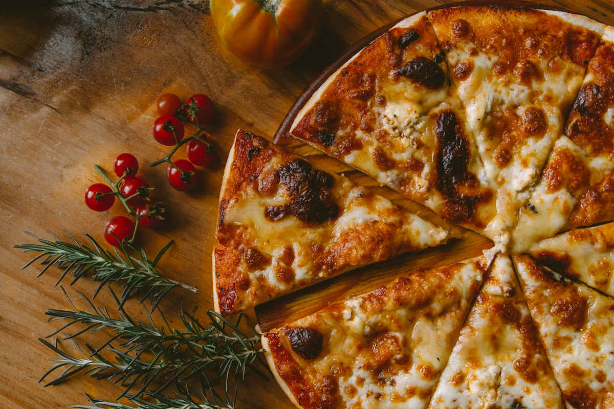

PASSAPAROLA · GARDONE VAL TROMPIA
Una fetta tira
l'altra.
Pizza fatta con cura, piatti di mare e il piacere di stare insieme.

PASSAPAROLA · GARDONE VAL TROMPIA
Pizza fatta con cura, piatti di mare e il piacere di stare insieme.
